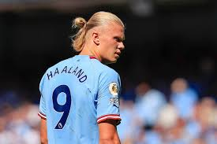
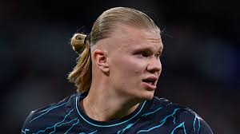
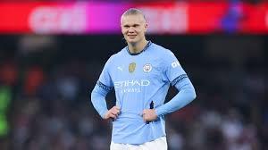

подробно о халанде



Э́рлинг Брёут Хо́ланн[2][3] (норв. Erling Braut Haaland,
при рождении написание фамилии — Håland, норвежское произношение:
21 июля 2000, Лидс, Англия) — норвежский футболист, нападающий английского
клуба «Манчестер Сити» и сборной Норвегии. Рекордсмен английской
Премьер-лиги по голам за сезон (36 голов в сезоне 2022/23)[4].
Лучший бомбардир в истории сборной Норвегии.
Холанн начинал карьеру в норвежских клубах «Брюне» и «Молде»
, а в январе 2019 года перешёл в австрийский клуб «Ред Булл Зальцбург».
Благодаря своим играм в Австрии в 2020 году норвежец подписал контракт
с дортмундской «Боруссией», в составе которой выиграл Кубок Германии.
Летом 2022 года Эрлинг стал игроком английского «Манчестер Сити» и
в своём дебютном сезоне сыграл важную роль в завоевании «требла»; его 52 гола
во всех соревнованиях стали самыми результативными для игрока Премьер-лиги.
Холанн был признан молодым игроком лиги и игроком сезона, став первым игроком,
получившим обе награды в один и тот же год.
За свою карьеру норвежец получил несколько индивидуальных наград и
побил множество рекордов, включая награду «Golden boy» в 2020 году,
а в 2021 году был назван лучшим игроком сезона в Бундеслиге, кроме
того, он был включён в список FIFA FIFPro World11 на 2021, 2022
и 2023 годы. Он также побил множество рекордов Премьер-лиги,
в том числе по количеству голов, забитых за сезон, стал самым
быстрым игроком, забившим два, три, четыре и пять хет-триков
, и первым в истории лиги, забившим хет-трик в трёх домашних
матчах подряд. В 2023 году за свои голевые успехи он получил
«Золотую бутсу» Премьер-лиги, европейскую «Золотую бутсу» и
«трофей Герда Мюллера». В том же году он был признан лучшим игроком года
УЕФА среди мужчин, лучшим игроком мира по версии IFFHS и
занял второе место в номинации «Золотой мяч», уступив только Лионелю Месси.